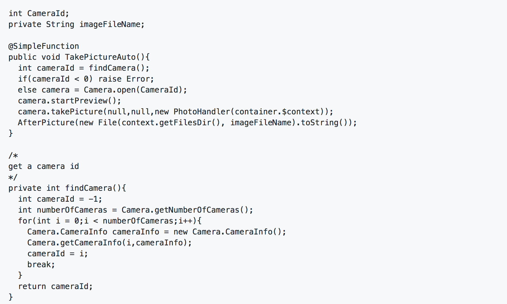
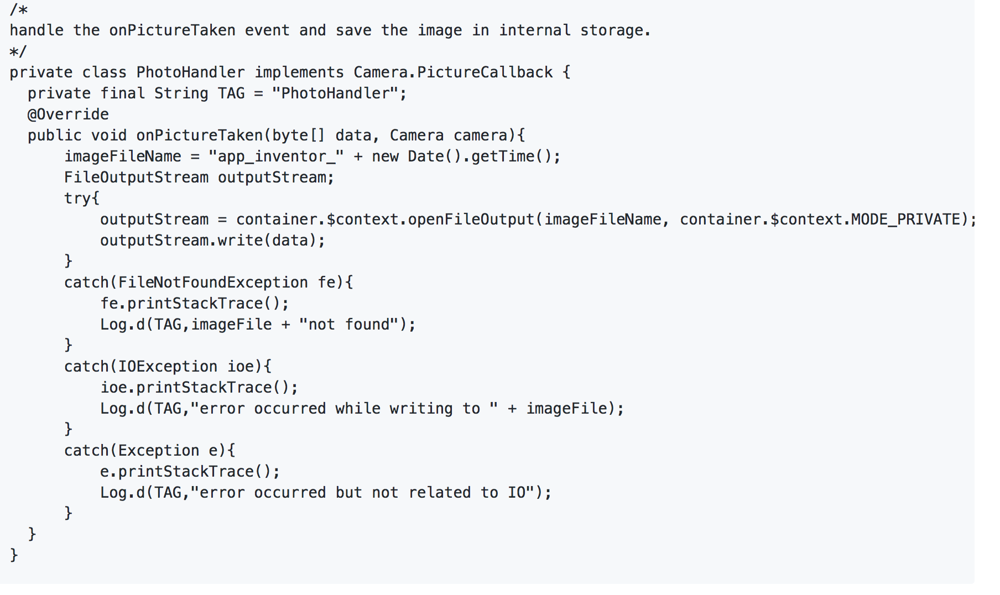

This challenge involved solving two problems with respect to the code base of AppInventor.
AppInventor has a component called Camera which allowed users to open a front camera by default. However, this feature stopped working on newer versions of android. The first part of the challenge required us to find out the reason for it. I figured that the problem lies in the takePicture() method in Camera.java. The TakePicture() invokes Camera via the IMAGE_CAPTURE implicit intent. The Camera.java class has a property called userFront. The TakePicture() method checks if useFront is set to true. If it is set to true then it adds an extra to the intent that invokes Camera with the statement intent.putExtra("android.intent.extras.CAMERA_FACING", 1). This indicates that the front camera should open by default if the property is set to true. However, the "android.intent.extras.CAMERA_FACING" is an undocumented feature in Android and does not work for newer versions of Android. Since, newer android stopped supporting this feature useFront stopped working and had to be removed from AppInventor.
The second part of the challenge required us to design a feature that would allow users to automatically take pictures. To implement this feature all we need to do is add a method in the class Camera.java (discussed in the point 1) and annotate it with @SimpleFunction. Lets call this function TakePictureAuto(). Inside this method we use the Camera API to automatically click a picture, store it in internal storage and trigger the AfterPicture event just like in TakePicture(). Note it is important to annotate TakePictureAuto() with @SimpleFunction because that would make it visible to the user in the Blocks editor, allowing her to invoke this function from the blocks editor. Following is a code snippet for TakePictureAuto:  
Note I use internal storage to save the image as opposed to external storage because saving in internal stroage is more secure. The TakePicture() method stores images in external storage though. I could have done the same but I am not sure why that is required. Maybe I am missing a nuance which is why I am documenting it.